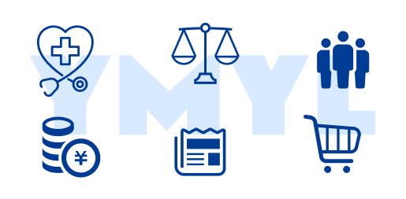

反社チェックあり
安全性と信用性を担保するための基本確認。
プレスリリースを出すだけで満足していませんか？
ここに紹介文が入ります。後で実際のコンテンツへ変更します。
プレスリリースを出すだけで
満足していませんか？
PressReachは配信して終わりではなく、 取材・記事化・大手ニュースメディア掲載までを 見据えた、成果コミット型の プレスリリースサービスです。
PressReachは、ただのプレスリリースサービスではありません。
一般的な配信サービスは、リリース情報を各メディアに届けるところまでが役割です。
しかし日本国内の主要プレスリリース配信サイトでは、毎日1,000件以上の情報が流れ、多くの情報が埋もれてしまいます。
PressReachでは、提携メディアを通じた取材、第三者視点での記事執筆、そして大手ニュースメディア掲載までを見据えて設計されています。
ニュースとして取り上げられるかは、 ほぼ運任せとなりがち。
日々多数の情報が配信され、 露出に繋がらないケースが多い。
第三者性が弱く、 読者やメディアからの信頼獲得に不利。
発信内容を深掘りし、 ニュースとして扱いやすい形へ整理。
企業発表の枠を超えた、 信頼感のある記事表現へ。
掲載コミット型だからこその安心感を設計。
通常のプレスリリース配信は「各種メディアへ情報を届けるまで」がサービス範囲です。
PressReachは、企業への取材から第三者目線での記事化、掲載までをコミットする点が決定的に異なります。
| 比較項目 | PressReach | 通常の配信サービス |
|---|---|---|
| サービスの提供範囲 | 取材 ➔ 記事執筆 ➔ 配信 ➔ 掲載完了 | 提携メディア各社への一斉配信のみ |
| 主要ニュースメディア掲載 | 100%掲載を目指す | 確約なし（すべてメディア判断） |
| 記事の切り口（作成方法） | 第三者記事 | 企業自身が作成したリリースをそのまま転載 |
| 不掲載時のリスク | 全額返金保証 | 掲載されなくても配信費用は発生 |
| 営業資料・二次活用の効果 | 「大手メディア掲載」として利用可能 | 「一斉配信した」という事実のみ |
プロによる取材と第三者目線の記事制作
大手メディア露出により、企業・サービスの見え方を一段引き上げます。
第三者メディア掲載実績が、商談・提携・採用での安心材料になります。
指名検索やSNS拡散時の訴求力が増し、周知効果を高めます。
AI検索・生成AIから参照されやすい情報基盤づくりにも寄与します。
AIO対策とは、ChatGPTやGoogle AI Overviewsなどの生成AIが情報を提供する際に 自社のコンテンツを優先的に引用・推奨してくれるようにするための対策です。 LLMO（大規模言語モデル最適化）やGEO（生成エンジン最適化）とも呼ばれ、 SEOのその先にある"AIに選ばれる状態"をつくります。
大手有名ニュースメディアに掲載された実績は、 AIが参照先を評価するうえでプラスに働きます。
Experience / Expertise / Authoritativeness / Trustworthiness の視点で、 信頼に厚みを持たせます。
検索結果の要約化が進む中でも、 引用される側に回るための土台として有効です。
プレスリリースを出して終わりになっていませんか？
「メディアに取り上げられるかは運」と思われがちですが、PressReachは取材前提で設計されたプレスリリースサービスです。
月間数億〜数百億PV級の大手ニュース配信メディアへの掲載を見据え、掲載不可の場合は全額返金保証で伴走します。
配信ではなく“掲載”をゴールに設計
複数プランでは別テーマ・別取材で展開
会社名検索時の信頼材料としても活用
大手メディア掲載を前提とするため、反社チェックと掲載したいサービス・内容の簡易審査を実施します。 誰でも通るサービスではなく、掲載品質を守るために審査制を採用しています。
安全性と信用性を担保するための基本確認。
メディア掲載に適したテーマ・表現力を確認。
サービス全体の信用を守るための仕組みです。
YMYL (Your Money or Your Life)とは、Googleの検索品質評価基準の一つ。 人々の生命、健康、財産に重大な影響を与えるジャンルを指し、 医療や金融等はこのYMYLに該当する為、他の分野よりも極めて高い正確性と信頼性が求められます。

単発から年間運用まで対応。複数配信プランは1回あたりの単価が下がり、ニュースメディア対策としても継続的に露出を積み上げやすくなります。
フォームからご相談・申込み
反社チェック・簡易審査
強みや背景をヒアリング
第三者視点で記事構成化
内容精査と読みやすさ調整
大手ニュースメディア掲載へ
皆さんがご存じのメディア様になります。
例えばヤフーニュース、livedoorニュース、スマートニュース、 グノシー、LINEニュース、dメニュー、Googleニュース、 その他がございます。
ここに回答を入力してください。
ここに回答を入力してください。
ここに回答を入力してください。
ここに回答を入力してください。
ここに回答を入力してください。
ここに回答を入力してください。
PressReachは、配信して終わるプレスリリースではなく、取材・記事化・掲載までを見据えた成果コミット型サービスです。
審査制だからこその信頼感と、掲載不可時の返金保証で、広報戦略を次のステージへ進めます。